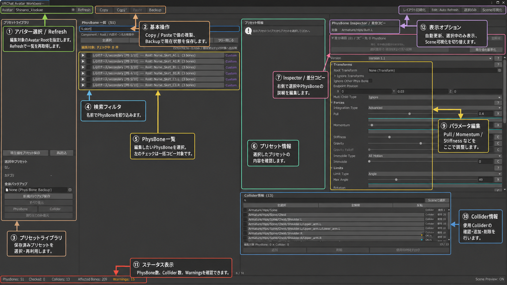

PhysBone / Collider
PhysBone Editor
Avatar内のPhysBoneとColliderを一覧で確認し、値の編集・複製・プリセット適用・バックアップをまとめて行うEditorです。

基本操作
- Avatar Rootを指定してRefresh。 対象Avatar内のPhysBoneとColliderを取得します。
- PhysBone一覧から対象を選択。 検索欄でComponent名・Root・内部ボーン名を絞り込めます。
- 右側Inspectorで値を調整。 選択中のVRC PhysBone Inspectorをそのまま操作できます。
- Copy / Pasteまたはプリセットを利用。 複数のチェック対象へ同じ設定をまとめて反映できます。
- Colliderを確認・割り当て。 使用Colliderを一覧から確認し、追加・削除を行います。
- 必要に応じて全体バックアップ。 PhysBone、Collider、Collider割り当てを保存し、後から個別またはまとめて復元できます。
プリセットについて
PhysBoneプリセットにはPull、Spring、Stiffness、Gravity、Gravity Falloff、Immobile、Radius、Endpoint Positionなどを保存できます。Collider参照とRoot Transformはプリセットには保存しないため、Collider割り当てはEditor側で管理します。
バックアップの復元はEdit Modeで実行します。復元操作はUndo対象です。